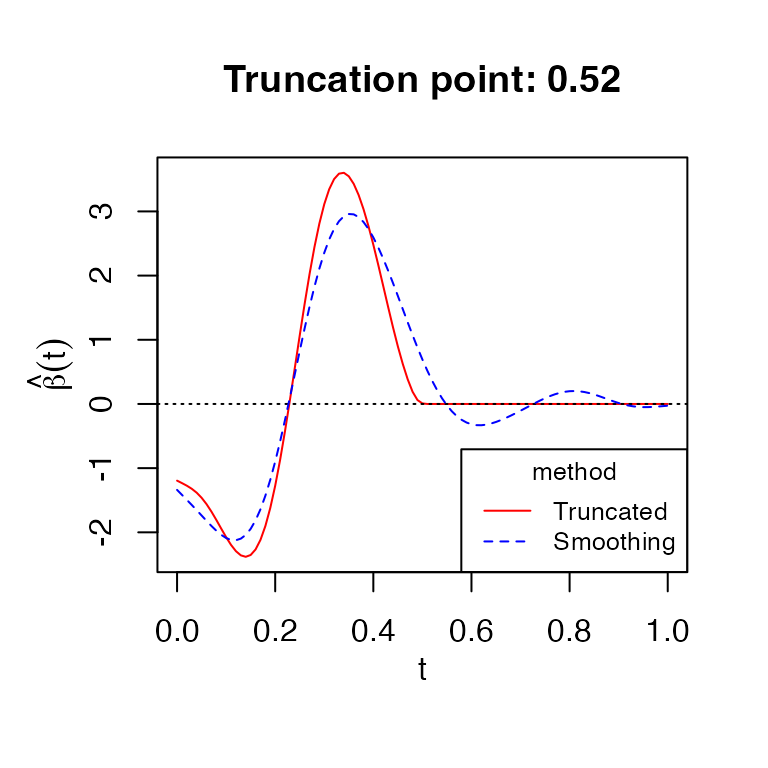
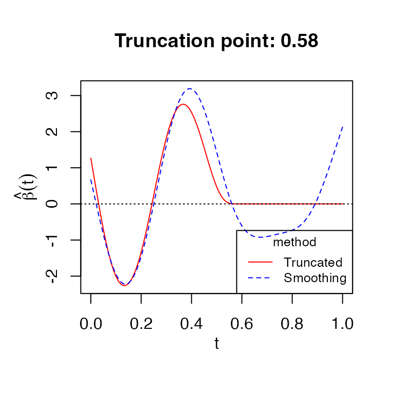

An introduction to `FGLMtrunc`
FGLMtrunc.RmdIntroduction
FGLMtrunc is a package that fits truncated Functional
Generalized Linear Models as described in Liu, Divani, and
Petersen (2020). It implements methods for both functional linear
and functional logistic regression models. The solution path is computed
efficiently using active set algorithm with warm start. Optimal
smoothing and truncation parameters (\(\lambda_s, \lambda_t\)) are chosen by
Bayesian information criterion (BIC).
To install FGLMtrunc directly from CRAN, type in R
console this command:
install.packages("FGLMtrunc")To load the FGLMtrunc package, type in R console:
library(FGLMtrunc)The function for fitting model is fglm_trunc, which have
arguments to customize the fit. Below are details on some required
arguments:
X.curvesis required for matrix of functional predictors.Yis required for response vector.Either
nbasisorknotsis needed to define the interior knots of B-spline.
Please use ?fglm_trunc for more details on function
arguments. We will demonstrate usages of other commonly used arguments
by examples.
Functional Linear Regression (family="gaussian")
Functional linear regression model is the default choice of function
fglm_trunc with argument family="gaussian".
For illustration, we use dataset LinearExample, which we
created beforehand following Case I in simulation studies section from
Liu et. al. (2020). This dataset contains \(n=200\) observations, and functional
predictors are observed at \(p=101\)
timepoints on \([0,1]\) interval. The
true truncation point is \(\delta =
0.54\).
data(LinearExample)
Y_linear = LinearExample$Y
Xcurves_linear = LinearExample$X.curves
timeGrid = seq(0, 1, length.out = 101)
plot(timeGrid, LinearExample$beta.true, type = 'l',
main = 'True coefficient function', xlab = "t", ylab=expression(beta(t)))Fitting FGLMtrunc model for linear regression
We fit the model using 50 B-spline basis with default
degree=3 for cubic splines. Since argument
grid is not specified, an equally spaced sequence of length
\(p=101\) on \([0,1]\) interval (including boundaries)
will automatically be used.
fit = fglm_trunc(Y_linear, Xcurves_linear, nbasis = 50)fglm_trunc also supports parallel computing to speed up
the running time of tuning regularization parameters. Parallel backend
must be registered before hand. Here is an example of using parallel
with doMC backend (we cannot run the code here since it is
not available for Windows) :
library(doMC)
registerDoMC(cores = 2)
fit = fglm_trunc(Y_linear, Xcurves_linear, nbasis = 50, parallel = TRUE)One can also manually provides grid or
knots sequences (or both). If knots is
specified, nbasis will be ignored.
k <- 50 - 3 - 1 #Numbers of knots = nbasis - degree - 1
knots_n <- seq(0, 1, length.out = k+2)[-c(1, k+2)] # Remove boundary knots
fit2 = fglm_trunc(Y_linear, Xcurves_linear, grid = timeGrid, knots = knots_n)fit and fit2 fitted models will have the
same results.
fit is an object of class FGLMtrunc that
contains relevant estimation results. Please use
?fglm_trunc for more details on function outputs. Function
call and truncation point will be printed with print
function:
print(fit)
#>
#> Call: fglm_trunc(Y = Y_linear, X.curves = Xcurves_linear, nbasis = 50)
#>
#>
#> Optimal truncation point: 0.52Plotting with fitted FGLMtrunc model
We can visualize the estimates of functional parameter \(\beta\) directly with
plot:
plot(fit)
The plot shows both smoothing and truncated estimates of \(\beta\). We can set argument
include_smooth=FALSE to show only truncated estimate.
Predicting with fitted FGLMtrunc model
Predict method for FGLMtrunc fits works similar to
predict.glm. Type "link" is the default choice
for FGLMtrunc object. For linear regression, both type
"link" and "response" return fitted values.
newX.curves is required for these predictions.
predict(fit, newX.curves = Xcurves_linear[1:5,])
#> [,1]
#> [1,] 2.1337413
#> [2,] 1.2286605
#> [3,] 1.8207552
#> [4,] -0.2430198
#> [5,] 0.5901628To get truncated estimate of \(\beta\), we can use either
fit$beta.truncated or predict function:
predict(fit, type = "coefficients")
#> [1] -1.194642e+00 -1.233189e+00 -1.274041e+00 -1.321971e+00 -1.382684e+00
#> [6] -1.461724e+00 -1.560226e+00 -1.676778e+00 -1.806592e+00 -1.942359e+00
#> [11] -2.075460e+00 -2.195993e+00 -2.293871e+00 -2.358836e+00 -2.381285e+00
#> [16] -2.352969e+00 -2.266606e+00 -2.117256e+00 -1.901351e+00 -1.619372e+00
#> [21] -1.273650e+00 -8.713600e-01 -4.219470e-01 6.139018e-02 5.633530e-01
#> [26] 1.068248e+00 1.560120e+00 2.023704e+00 2.444542e+00 2.810437e+00
#> [31] 3.112588e+00 3.344368e+00 3.503214e+00 3.588157e+00 3.601536e+00
#> [36] 3.546803e+00 3.429575e+00 3.256279e+00 3.034685e+00 2.773190e+00
#> [41] 2.481013e+00 2.167832e+00 1.843081e+00 1.516008e+00 1.196723e+00
#> [46] 8.962979e-01 6.237543e-01 3.847519e-01 1.897238e-01 6.071026e-02
#> [51] 8.314897e-03 1.796018e-06 0.000000e+00 0.000000e+00 0.000000e+00
#> [56] 0.000000e+00 0.000000e+00 0.000000e+00 0.000000e+00 0.000000e+00
....Functional Logistic Regression (family="binomial")
For logistic regression, we use dataset LogisticExample,
which is similar to LinearExample, but the response \(Y\) was generated as Bernoulli random
variable.
data(LogisticExample)
Y_logistic = LogisticExample$Y
Xcurves_logistic = LogisticExample$X.curvesFitting FGLMtrunc model for logistic regression
Similarly, we fit the model using 50 B-spline basis with default
choice of cubic splines. We need to set family="binomial"
for logistic regression. Printing and plotting are the same as
before.
fit4 = fglm_trunc(Y_logistic, Xcurves_logistic, family="binomial", nbasis = 50)
print(fit4)
#>
#> Call: fglm_trunc(Y = Y_logistic, X.curves = Xcurves_logistic, family = "binomial", nbasis = 50)
#>
#>
#> Optimal truncation point: 0.58
plot(fit4)
Predicting with fitted FGLMtrunc model for logistic
regression
For functional logistic regression, each type option
returns a different prediction:
type="link"gives the linear predictors which are log-odds.type="response"gives the predicted probabilities.type="coefficients"gives truncated estimate of functional parameter \(\beta\) as before.
Functional Linear Regression with scalar predictors
Fitting FGLMtrunc model
FGLMtrunc allows using scalar predictors together with
functional predictors. First, we randomly generate observations for
scalar predictors:
scalar_coef <- c(1, -1, 0.5) # True coefficients for scalar predictors
set.seed(1234)
S <- cbind(matrix(rnorm(400), nrow=200), rbinom(200, 1, 0.5)) # Randomly generated observations for scalar predictors. Binary coded as 0 and 1.
colnames(S) <- c("s1", "s2", "s3")Next, we modify the response vector from LinearExample
so that it takes into account scalar predictors:
Y_scalar <- Y_linear + (S %*% scalar_coef)Then we fit FGLMtrunc model with the matrix of scalar
predictors S:
fit_scalar = fglm_trunc(X.curves=Xcurves_linear, Y=Y_scalar, S=S, nbasis = 50)
fit_scalar
#>
#> Call: fglm_trunc(Y = Y_scalar, X.curves = Xcurves_linear, S = S, nbasis = 50)
#>
#> Intercept s1 s2 s3
#> 1.0865 1.0937 -1.0411 0.4233
#>
#> Optimal truncation point: 0.49Fitted coefficients for scalar predictors are close to the true values.
Predicting with scalar predictors
To make prediction with fitted model using scalar predictors, we need
to specified argument newS:
predict(fit_scalar, newX.curves = Xcurves_linear[1:5,], newS=S[1:5,])
#> [,1]
#> [1,] 0.3837103
#> [2,] 1.2553910
#> [3,] 3.2764746
#> [4,] -3.4882131
#> [5,] 0.7946992